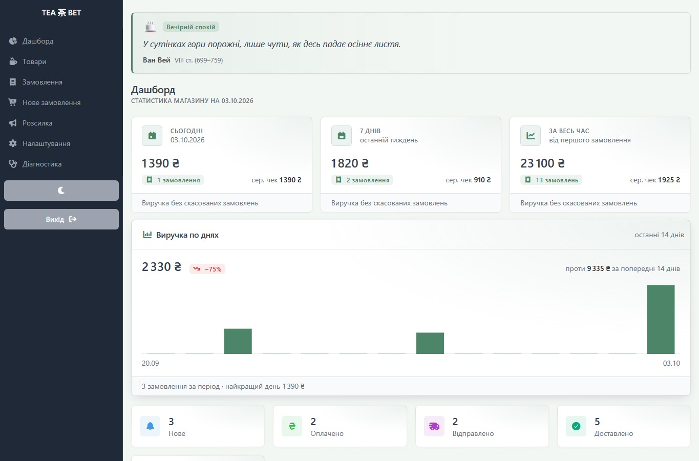

ОБРАНИЙ ПРОЄКТ / 01↗


Магазин у Telegram. І все, що за ним стоїть.
Mini App, бот і адмінка для чайної крамниці n1kotea.
Дослідити проєкт ↗ВЕБРОЗРОБНИК · УКРАЇНА / ВІДДАЛЕНО
Створюю сайти, Telegram-магазини та інструменти для бізнесу. Відкритий до роботи в команді й проєктної співпраці.
ПОВНА ЗАЙНЯТІСТЬ / ПРОЄКТИ

Mini App, бот і адмінка для чайної крамниці n1kotea.
Дослідити проєкт ↗ОБРАНІ РОБОТИ
01 — 0201 / КЛІЄНТСЬКИЙ ПРОЄКТ
n1kotea / TEA BET — бот, Mini App і CRM для магазину китайського чаю. Оплачуваний клієнтський проєкт; Mini App запущено в жовтні 2026.
Дати покупцю зручну вітрину й оформлення замовлення, а менеджеру — інструмент для роботи із замовленнями та товарами.
Розробка бота, вітрини та адмінки з AI-асистуванням: каталог, кошик, оформлення, статуси замовлень, сповіщення й відстеження доставки.
Mini App опубліковано; каталог і демо нижче дозволяють дослідити покупку та роботу менеджера.
СПРОБУЙТЕ САМІ / MINI APP
Оберіть чай і оформіть демо-замовлення. Далі воно з’явиться в адмінці на цій сторінці.
Куди потрапляє замовлення ↓Копія каталогу магазину періодично оновлюється. Демо-замовлення залишаються у вашому браузері.
ТЕПЕР — З БОКУ МЕНЕДЖЕРА
Спробуйте на готовому прикладі або оформіть власне демо-замовлення у вітрині вище.
Тестову ТТН уже підставлено — за потреби її можна змінити.
Спробуйте на готовому прикладі або оформіть власне демо-замовлення у вітрині вище.
Адмінку відтворено в браузері за робочою системою. Відстеження Нової пошти й повідомлення імітовані.
02 / КЛІЄНТСЬКИЙ ПРОЄКТ
Інтернет-магазин сімейної пасіки, створений на основі Instagram-крамниці. Сайт працює та приймає замовлення.
Каталог, сторінки товарів, варіанти й кошик допомагають покупцю обрати мед і оформити замовлення.
Розробка сайту з AI-асистуванням: валідація кошика на сервері та надсилання даних замовлення в Telegram.
ЯК Я ПРАЦЮЮ
За інтерфейсом — перевірка даних, надійне оформлення замовлення та можливість відновлення після релізу.
Сервер перевіряє підпис Telegram initData.
Ціни й залишки перевіряються в транзакції; повторне надсилання не створює дубль.
Для TEA BET передбачені резервна копія бази, зафіксований образ і скрипт відкату.
Результати конкретного офлайн-прогону TEA BET на синтетичних даних, жовтень 2026: 1116 smoke-перевірок, 669 тестів pytest, 12 браузерних сценаріїв. Нотатки до перевірки ↗
СПІВПРАЦЯ
Можу долучитися до команди або взяти проєкт із чітким обсягом роботи.
Сайти, онлайн-магазини та внутрішні інструменти — від інтерфейсу до логіки замовлень.
Боти, Mini Apps, адмінки, каталоги, сповіщення та робочі процеси менеджера.
Працюю з AI-агентами Claude Code і Codex; перевіряю результати перед запуском.
НАСТУПНИЙ КРОК
Віддалено з України. Відкритий до повної зайнятості та проєктної співпраці.
Telegram ↗